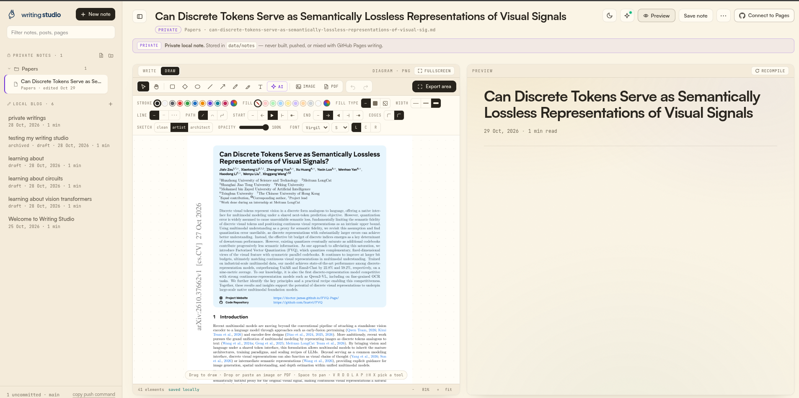

A calm place to write, sketch, and publish — on your own disk.
Writing Studio is a local-first writing environment for people who think in Markdown, diagrams, and annotated papers. Write an article, draw the architecture beside it, mark up a PDF, keep private notes in a real folder tree, and build a static blog — all from one quiet interface.
There is no account, no cloud, no database, and no telemetry. Your writing stays as plain files on your disk. The only network calls are the ones you make yourself: an AI provider you configure with your own key, and the fonts used by built articles.
- Linux · macOS · Windows
- 100% local
- MIT licensed
No install: Markdown and the full diagram canvas in one browser tab. Nothing is stored — close the tab and the work is gone.
Download the desktop app
The same studio in a native window — no Node.js, no terminal, no npm. Installers are published on GitHub Releases, one page for all three platforms.
.exe is published too.
macOS
.dmg
Apple Silicon and Intel builds.
Linux
.AppImage
Runs anywhere. .deb and .rpm are published too.
Your writing goes to Documents/WritingStudio and stays there when you install
a newer version.
First launch on macOS: right-click the app, choose Open, then confirm.
On Windows, SmartScreen may ask — More info → Run anyway.
On Linux: chmod +x Writing-Studio-*.AppImage before running it.
The installers are not code-signed yet, which is where those warnings come from. They are built from this repository by a public GitHub Actions run on every release tag.
Inside the studio
One window for the article, the diagram beside it, and the rendered preview — with private notes and the local blog in the same sidebar.

The first start
Writing Studio creates its store in the folder you chose and seeds a generic “Welcome to Writing Studio” article, so the studio opens with something to read. Nothing is ever overwritten.
content/your publishable local blogdata/notes/your private note vaultdist/generated static pages